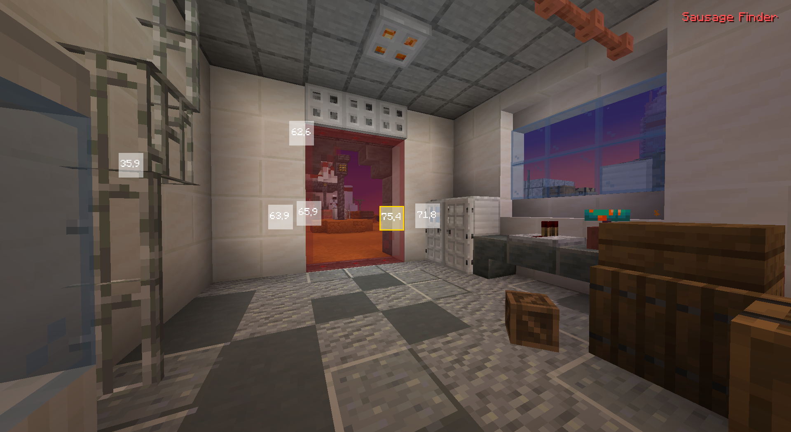
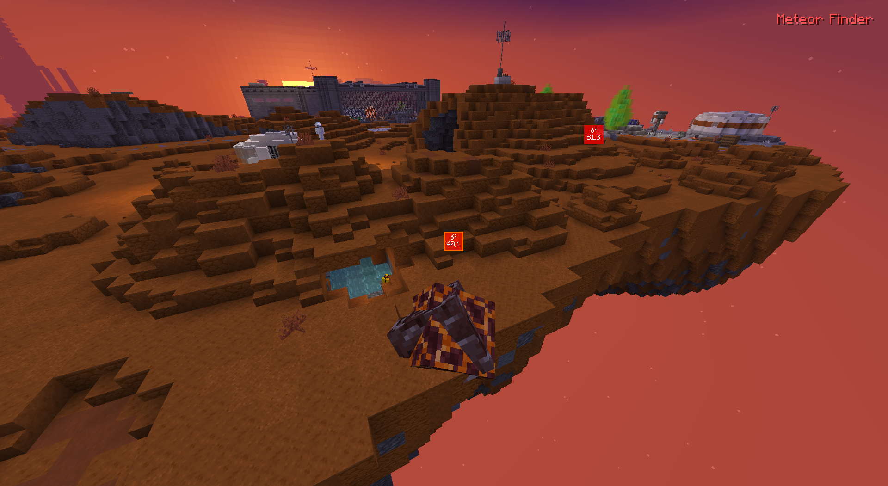
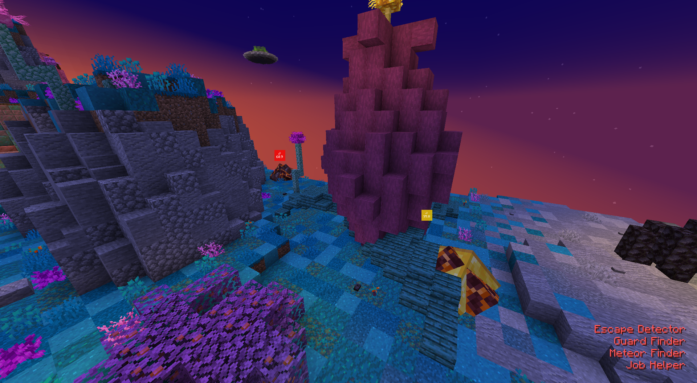
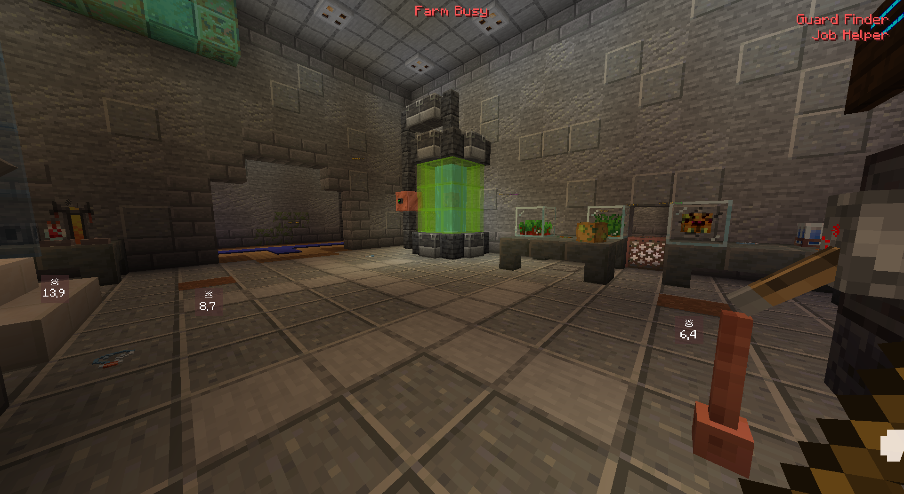
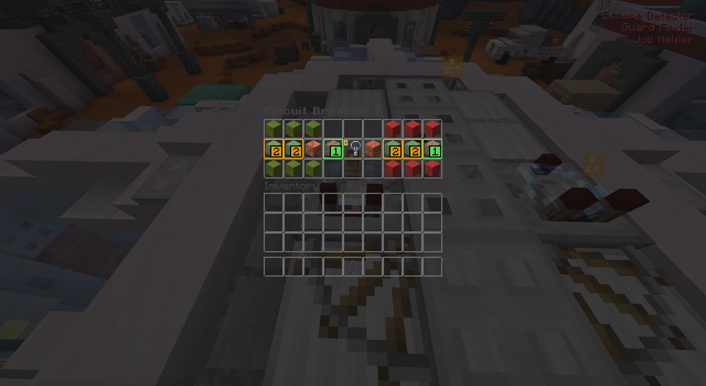
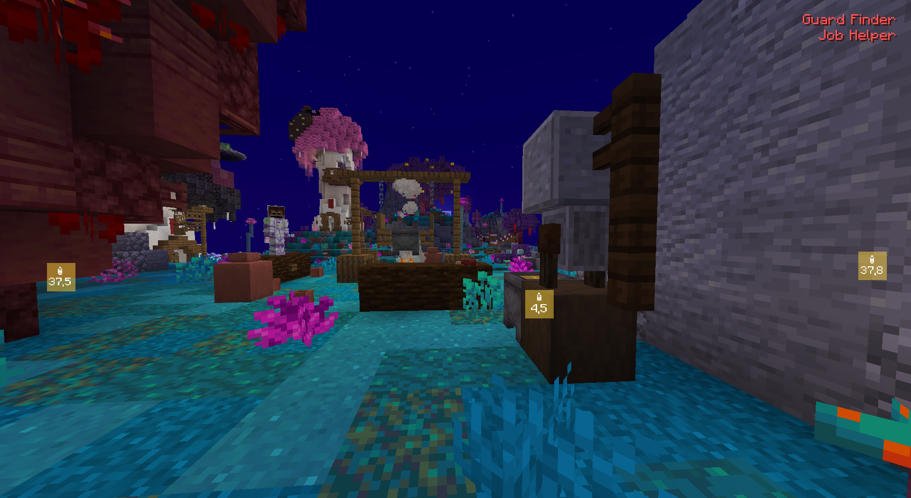
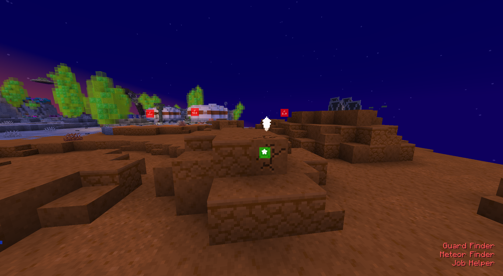
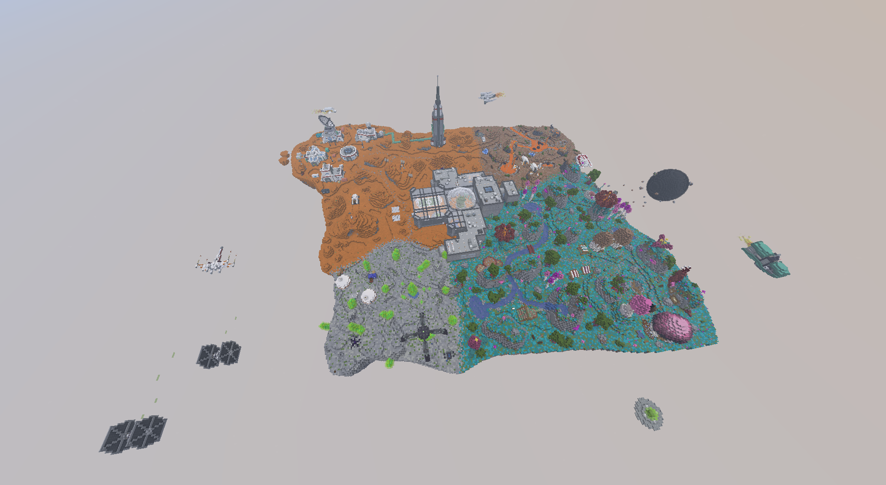
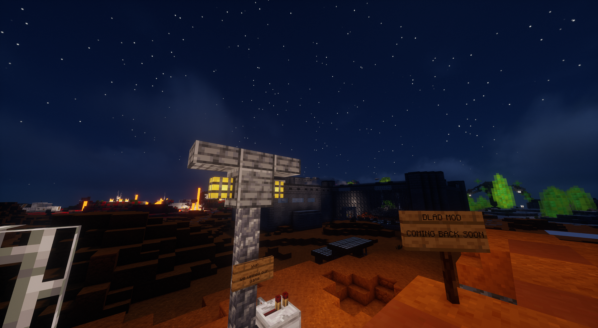

dlad (wip)
The undetectable "assistance" fabric mod for mlum
Download PageWe heavily encourage you check our FAQ
Features
- Completely hidden. All the features of this mod can be disabled. No chat messages are sent from this mod. Perfect for when getting ss'd
- Privacy-focused. Absolutely no personal data is collected or transmitted. Source: GitHub
- Escape detector - Displays location of escapees (useful for guards & prisoners). This features rules out fake escapes and unannounced escapes
- Guard finder - Displays the location of all guards nearby, color coded on if they're guard/detective and distance
- Autofish - Self explanatory, the only server side action the mod performs lays here
- Sausagetm finder - Displays the location of ALL sausage:tm: signs based on a radius
- Meteor finder - See the location of meteors based on render distance, gold & regular. Middle click display to disable
- Job helper - Extra information when farming for chocolate, such as nearest important blocks and in the case of mars fixing, where blocks to click. Middle click display to mark as seen
- QOL texture pack, included in the downloads page. Makes mopping and cleaning easier
Gallery
- Escape detector

- Guard finder

- Sausage:tm: finder

- Meteor detector (and hovering mechanic for disabling displays)
 
- Job helper - Mopping, farm status (top), mars fixing, turnip bottling & metal detector
   
- Mlum world download (available in downloads page)
 